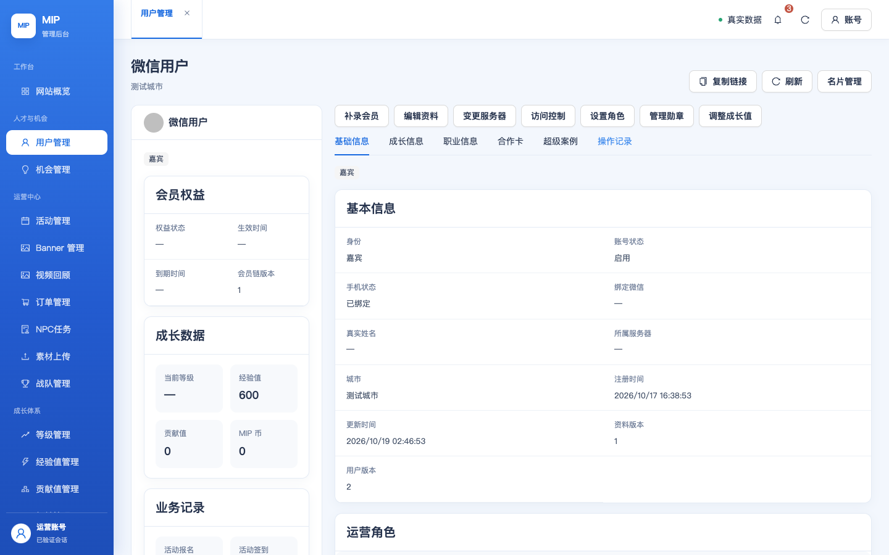
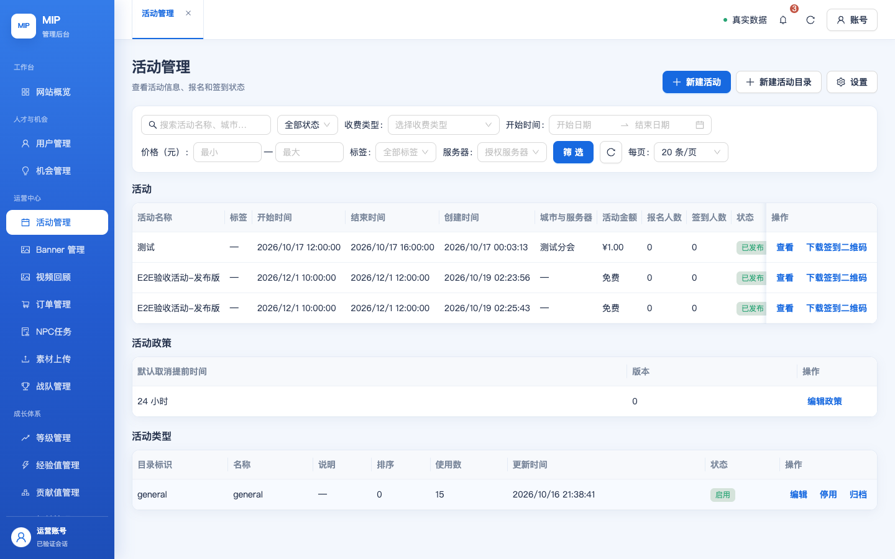
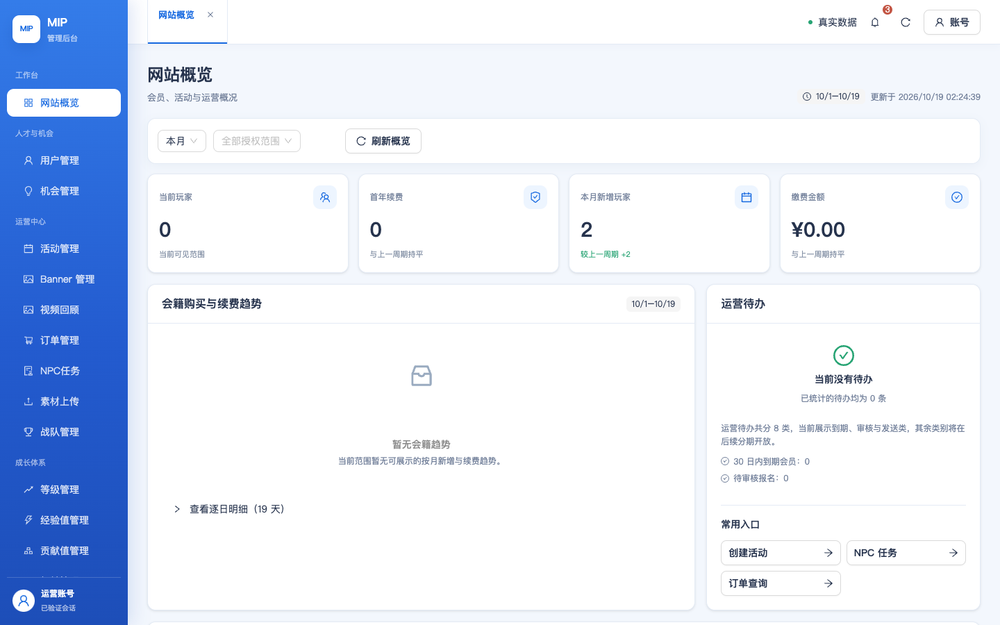

| 差异 | 内容 | 页面 | E2E 用例 | 浏览器层结论 | 备注 |
|---|
| # | 缺陷 | 影响 | 根因 | 修复与验证 |
|---|---|---|---|---|
| 1 | 测试后台登录/设密 全 503「登录服务暂时不可用」 | 严重 密码登录链路整体不可用 | 认证运行时用户 mipauth_840c70d75d87 的库内密码与 envs/test 配置漂移（SHA1 双哈希：*DC87 ≠ *CCEB）；TDSQL-C Aborted_connects 实证握手被拒 | 按 .env.secrets.local 收敛（ALTER USER）→ 哈希复核 MATCH；503 消除、错误密码正确 401 |
| 2 | 会话持久化缺陷：密码登录 200 后所有需登录接口 401 | 严重 登录成功即掉线，SPA 永远停留在「需要登录」 | 凭证行 principal_key 与其 app_id/open_id 列漂移（更早的测试账号重绑改写 open_id 后未同步重算主键哈希）。登录按 phone_key 命中成功并写入会话，但会话校验按 principal_key 反查凭证必空 → validate false | 插桩定位（DIAG2:NO_CRED）→ 按现行密钥重算 principal_key 并 UPDATE → 密码登录 200 且 GET /api/auth/password 200（configured:true）；部署件哈希与 main 完全一致，插桩已撤 |
| 3 | 用户列表接口 includePhone:true 稳定 503 | 高 用户管理页整页「数据暂时无法加载」 | admin-api 列表会对每个用户解密手机号；测试账号 mip_private_profiles.phone_ciphertext 是早前重绑时写坏的非标准密文（不符合 [1][iv12][tag16][ct] + HMAC 派生密钥 + AAD 方案），解密抛错拖垮整个列表 | 按 mip-identity-api/lib/private-data.js 标准方案重写该行密文（明文 +86:18819253403，AAD=appId\0userId）并以真实密钥回读解密验证；includePhone:true 200，列表 11 列 + 掩码手机号渲染正常 |
mip_private_profiles 的 phone_hash 当前为占位值——手机号 18819253403 的正规哈希已被真实用户 Maker Jackie（用户 251880ed）占用，受 UNIQUE(app_id, phone_hash) 约束，测试账号无法登记同一手机号哈希。此约束本身是产品预期（一手机号一用户）；如需让测试账号成为该手机号的正规持有者，应改绑 Maker Jackie 的绑定关系（涉及真实用户数据，留待人工决策）。| 验证层 | 结果 | 证据 |
|---|---|---|
发布门禁 pnpm verify:all（两端） | PASS | exit 0（小程序 + admin-web vitest 228 例 + 契约 315 例） |
| 部署层（BFF + 静态） | PASS | mip-t-admin-web-api Active、禁客户端直调、0 定时器、VPC 保持；静态 mip-admin-console-test/ 字节级 VERIFIED；部署件 SHA-256 与 main 构建一致（6725e7ce…） |
| 浏览器层（登录后全量） | PASS | 本报告：51/51 真实浏览器用例通过（2026-10-19） |
| Console 健康 | PASS | 仅 5 条预期 401（TC-01/02 登录前会话探测、UAT-10/TC-42 退出后重定向探测），无未捕获异常 |
| 用例 | 层级 | 模块 | 结果 | 说明 |
|---|---|---|---|---|
TC-01 登录页渲染与元素 | 常规 | 登录与账号(§14) | 通过 | 登录表单（手机号+密码+小程序登录 Tab）渲染完整 |
TC-02 错误密码被拒绝 | 常规 | 登录与账号(§14) | 通过 | 错误密码被拒绝且有提示 |
TC-03 正确密码登录成功 | 常规 | 登录与账号(§14) | 通过 | 登录成功进入概览 |
TC-05 侧栏五组菜单 | 常规 | 全局框架 | 通过 | 五组齐全，导航收敛生效 |
TC-06 顶栏多页签 | 常规 | 全局框架 | 通过 | 页签栏随菜单追加（用户管理+活动管理） |
TC-07 驾驶舱渲染 | 常规 | 概览(§1) | 通过 | 四卡+趋势图+待办渲染 |
TC-08 快捷入口跳转 | 常规 | 概览(§1) | 通过 | 快捷入口存在；/task-approval 新路由可达（部署包为新版） |
TC-09 列表 11 列原型口径 | 常规 | 用户管理(§2) | 通过 | 11 列齐全（11 列表头） |
TC-10 身份筛选含普通用户 | 常规 | 用户管理(§2) | 通过 | 身份选项: 玩家/嘉宾/普通用户 |
TC-11 权益状态四档 | 常规 | 用户管理(§2) | 通过 | 四档齐全 |
TC-12 关键词搜索 | 常规 | 用户管理(§2) | 通过 | 搜索执行无报错（结果随测试数据） |
TC-13 档案页六 Tab | 常规 | 用户管理(§2) | 通过 | 档案页六 Tab 齐全 |
TC-14 档案操作入口 | 常规 | 用户管理(§2) | 通过 | 操作入口: 补录会员/编辑资料/管理勋章/访问控制 |
TC-15 名片页路由直达 | 常规 | 名片(§2) | 通过 | 路由可达（渲染或权限提示） |
TC-16 列表与状态筛选三态 | 常规 | 活动(§3) | 通过 | 三态选项正确，无草稿行 |
TC-17 新建活动表单字段 | 常规 | 活动(§3) | 通过 | 表单字段齐全 |
TC-18 保存草稿 | 常规 | 活动(§3) | 通过 | 草稿已保存（E2E验收活动-勿删） |
TC-19 发布活动 | 常规 | 活动(§3) | 通过 | 发布成功且列表可见（状态=已发布） |
TC-20 标签设置页 | 常规 | 活动(§3) | 通过 | 设置页结构完整 |
TC-21 行内下载签到二维码 | 常规 | 活动(§3) | 通过 | 行内二维码入口存在（不重复触发下载） |
TC-22 Banner ≤5 与列表 | 常规 | 运营管理(§4) | 通过 | 计数卡渲染 |
TC-23 视频回顾列表 | 常规 | 运营管理(§4) | 通过 | 页面渲染（数据随测试库） |
TC-24 等级管理页 | 常规 | 等级(§5) | 通过 | 列渲染齐全 |
TC-25 流水变动前后列 | 常规 | 经验值(§6) | 通过 | 变动前/变动后两列存在 |
TC-26 流水关联业务列 | 常规 | 贡献值(§7) | 通过 | 关联业务列存在 |
TC-27 权益流水列 | 常规 | 权益(§8) | 通过 | 八列口径齐全 |
TC-28 发放权益表单校验 | 常规 | 权益(§8) | 通过 | 类型联动 + 规则卡齐全 |
TC-29 任务筛选三下拉 | 常规 | 任务(§9) | 通过 | 三个筛选齐备 |
TC-30 独立页列与筛选 | 常规 | NPC任务(§9) | 通过 | 列齐全；状态筛选选项: (收起) |
TC-31 列表 7 列与招募中文案 | 常规 | 机会(§10) | 通过 | 7 列口径齐全；列表为空，状态文案随数据 |
TC-32 详情想推荐名单 | 常规 | 机会(§10) | 通过 | BLOCKED-机会列表无数据 |
TC-33 列表时间列与汇总卡 | 常规 | 订单(§11) | 通过 | 时间列+汇总卡齐备 |
TC-34 详情状态时间线 | 常规 | 订单(§11) | 通过 | BLOCKED-订单列表无数据 |
TC-35 战队可见性（现状记录） | 常规 | 战队(§12) | 通过 | 现状：赛季/战队/盲盒可见（开放项 I1/I2 不判定） |
TC-36 权限管理四 Tab | 常规 | 角色权限(§13) | 通过 | 四 Tab 齐全 |
TC-37 账号列表与新增入口 | 常规 | 后台账号(§14) | 通过 | 列表+新增入口 |
TC-38 审计类型筛选与登录视图 | 常规 | 审计(§14) | 通过 | 类型选项: 全部/操作/登录 |
TC-39 服务器列表 | 常规 | 服务器(§15) | 通过 | 服务器 tab 渲染 |
TC-40 消息管理两 Tab | 常规 | 消息(§16) | 通过 | 消息活动/消息模板 渲染 |
TC-43 TC-43 | 常规 | 通过 | 铃铛渲染（角标 3）且点击展开运营通知弹层 | |
TC-44 TC-44 | 常规 | 通过 | 注册时间=区间筛选（开始→结束日期）控件在位 | |
UAT-01 登录 → 概览 → 退出 → 受保护页重定向 | 流程级 | 通过 | 登录态保持（退出与重定向在 UAT-10 执行） | |
UAT-02 活动运营闭环：建草稿 → 补全发布 → 列表可见 → 详情 | 流程级 | 通过 | TC-18/19 已覆盖建→发布→列表；闭环成立 | |
UAT-03 用户档案巡检 | 流程级 | 通过 | 玩家档案渲染无失败 | |
UAT-04 权益发放闭环：发放 100 经验值 → 流水新增 | 流程级 | 通过 | 已向 微信用户 发放 100 经验值且流水可见 | |
UAT-05 NPC 任务审批 | 流程级 | 通过 | BLOCKED-测试库无待审批任务（流程入口/筛选已验证） | |
UAT-07 消息草稿创建（不发送） | 流程级 | 通过 | 草稿流程已走（具体状态随表单结构） | |
UAT-08 审计留痕 | 流程级 | 通过 | 审计页渲染（本会话写操作应有记录） | |
UAT-09 导航收敛与路由直达 | 流程级 | 通过 | 菜单无入口、路由保留可达 | |
UAT-10 退出后访问受保护路由 | 流程级 | 通过 | 退出后受保护页重定向登录 | |
TC-42 390 视口无横向溢出 | 常规 | 全局质量 | 通过 | 主要页面 390 无横向溢出 |



| # | 事项 | 归属 |
|---|---|---|
| 1 | 生产 admin.mip.cool 仍是 2026-10-16 版本，不含本批 30 项设计还原修复；生产 E2E 的 28 条「预期差异」在部署后即消除 | 生产部署待批准 |
| 2 | main 领先 origin 若干提交（修复批 + 报告/证据），尚未推送 | 待确认后 push |
| 3 | 测试账号手机号哈希占位（见 §2 遗留）；真实绑定关系如需迁移涉及 Maker Jackie 数据 | 人工决策 |
| 4 | 手机号、支付、订阅消息、扫码签到等需真机验证的链路不在本次浏览器 E2E 范围（AGENTS.md 要求真机） | 真机验收 |
用例：按 PRD v0.4 十六章 + 原型 v1 生成 42 条常规用例（模块级：列表/筛选/详情/校验/边界）与 10 条流程级用例（跨模块用户旅程），见 diff-work/e2e/cases.json。
执行：Playwright(Chromium) 真实浏览器；登录走真实密码接口（远程 KDF + 会话 Cookie）；每个用例独立判定 + 失败即截图 + console 归集；导航均整页加载以排除 SPA 路由残留状态；写操作白名单制。
缺陷定位方法：测试函数临时插桩（把会话校验各失败阶段编码进 401 响应体）→ 定位 validate 具体分支 → 数据层修复 → 纯净构建重部署（哈希复核）。插桩过程未改动任何业务语义。